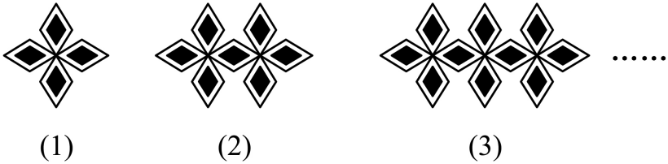
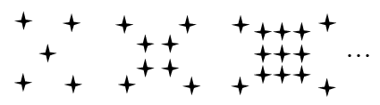
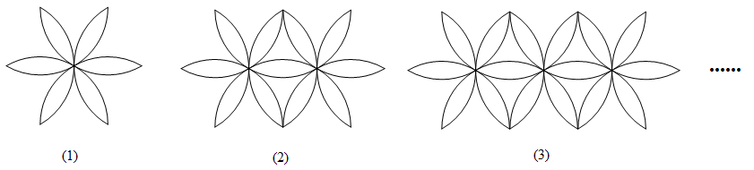
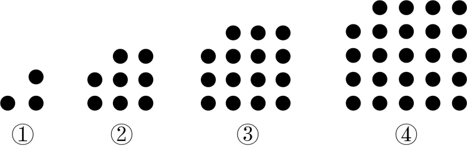
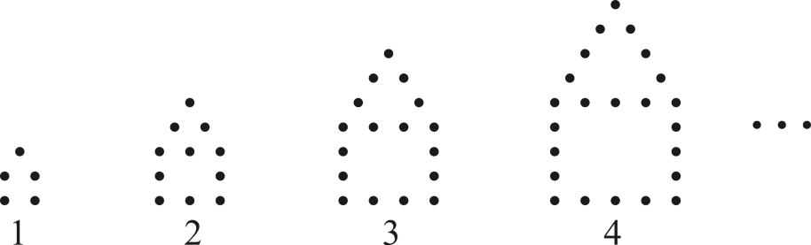
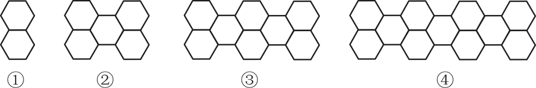
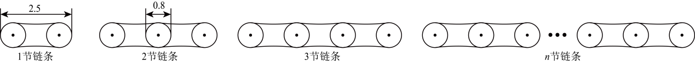
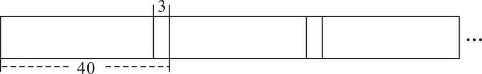

专题03 整式中的数式规律（举一反三专项训练）
【北师大版2024】

【题型1 探索数字中的排列规律】 1
【题型2 探索代数式中的排列规律】 2
【题型3 探索等式中的排列规律】 2
【题型4 探索表格中的排列规律】 3
【题型5 探索数阵中的排列规律】 5
【题型6 探索点（类似点）的个数排列规律】 6
【题型7 探索图形个数的排列规律】 7
【题型8 通过计算探索图形的排列规律】 8

【题型1 探索数字中的排列规律】
【例1】（24-25七年级上·全国·期中）观察下列一组数： a1=13， a2=35， a3=59， a4=717， a5=933，…，它们是按一定规律排列的，请利用其中规律，写出第n个数an= ．（用含n的式子表示）
【变式1-1】（24-25七年级上·吉林·阶段练习）观察下列一组数：−2，4，−8，16，−32，64，…，请根据你发现的规律写出这组数的第n个数为 （用含n的代数式表示）．
【变式1-2】（24-25七年级上·湖北孝感·期中）观察下面一列数：34，89，1516，2425，…，按照这个规律，第6个数应该是 ．
【变式1-3】（24-25七年级上·广东东莞·期中）仔细观察下列三组数
第一组： 1，4，9，16，25， …
第二组： −2，−4，−6，−8，−10，…
第三组： −1，0，3，8，15，…
解答下列问题：
(1)每一组的第6个数分别是_____，______，_____；
(2)分别写出各组的第n个数_____，_____，_____；
(3)取每组数的第10个数，计算它们的和．
【题型2 探索代数式中的排列规律】
【例2】观察多项式x−3x2+5x3−7x4+⋯的构成规律，则：
（1）它的第5项是 ；
（2）当x=1时，多项式前100项的和为 ．
【变式2-1】（24-25八年级上·云南文山·期末）按一定规律排列的单项式：−x，3x2，−5x3，7x4，−9x5⋯，第2025个单项式是（ ）
A．4047x2024 B．−4049x2025 C．−2023x2024 D．2025x2025
【变式2-2】有一组按规律排列的多项式：a−b，a2+b3，a3−b5，a4+b7，…，则第2023个多项式是（ ）
A．a2023+b4047 B．a2023−b4047 C．a2023+b4045 D．a2023−b4045
【变式2-3】（24-25七年级上·山东聊城·期末）观察下面一组单项式：−32x2y，54x4y2，−78x6y3，916x8y4，⋯根据其中的规律，得出第n个单项式是 ．
【题型3 探索等式中的排列规律】
【例3】（24-25六年级上·山东烟台·期末）观察以下各个等式的规律：第一个等式：22−12−12=1，第二个等式：32−22−12=2，第三个等式：42−32−12=3，……，请用上述等式反映出的规律，猜想第n个等式为（用含n的代数式表示） ．
【变式3-1】观察：3×5+1=16=42；你发现了什么规律？根据你发现的规律，请你用含一个字母的等式将上面各式呈现的规律表示出来．
【变式3-2】观察下列顺序排列的等式：
9×0+2=2，
9×1+3=12，
9×2+4=22，
9×3+5=32，
猜想第 n 个等式为 （用含有 n 的等式表示）．
【变式3-3】观察下列等式：
第1个等式：22−02=4×1，
第2个等式：32−12=4×2，
第3个等式；42−22=4×3，
第4个等式：52−32=4×4，
……
根据上述规律，第n个等式为 ．
【题型4 探索表格中的排列规律】
【例4】观察由等腰梯形组成的下图和所给表中数据的规律后回答问题：

梯形个数 | 1 | 2 | 3 | 4 | 5 | .... |
图形周长 | 5 | 8 | 11 | 14 | 17 | ..... |
当等腰梯形个数为2006时，图形的周长为（ ）
A．2007 B．8026 C．6017 D．6020
【变式4-1】将正整数按如图的规律排列：平移表中的方框，方框中的4个数的和可能是（ ）

A．2010 B．2014 C．2018 D．2022
【变式4-2】（24-25七年级上·辽宁大连·期中）用相同的小木棒按如图方式拼成图形．

(1)按图形规律完成下表：
图形 | 1 | 2 | 3 | 4 | … |
所用木棒根数 | 6 | 14 | 22 | a | … |
表中的a= ；按这种方式拼下去，第n个图形需要 根小木棒（用n的代数式表示）；
(2)第100个图形需要用多少根小木棒?
(3)小明同学说他按这种方式拼出来的一个图形共用了2024根小木棒，你认为可能吗?如果可能，那是第几个图形?如果不可能，请说明理由．
【变式4-3】（24-25七年级上·广东东莞·期中）观察：用火柴棒按下列方式搭建三角形：
问题：当三角形的个数为n时，火柴棒的根数是多少？下面是四个同学的发现：根据小明的发现：从第二个图形起，与前一图形相比，增加2根火柴棒，可得：
三角形个数 | 1 | 2 | 3 | 4 | |
火柴棒根数 | 3 | 3+2 | 3+2+2 | 3+2+2+2 | … |
根据小旭的发现：每个三角形由三根火柴棒组成，从第一个三角形起，火柴棒根数等于所含三角形的个数乘以3再减去重复的火柴棒根数，可得：
三角形个数 | 1 | 2 | 3 | 4 | … |
火柴棒根数 | 1×3 | 2×3−1 | 3×3−2 | 4×3−3 | … |
根据小晗的发现：观察火柴棒的根数与三角形个数的对应关系，可得：
三角形个数 | 1 | 2 | 3 | 4 | … |
火柴棒根数 | 3=1×2+1 | 5=2×2+1 | 7=3×2+1 | … |
根据小亮的发现：把组成图形的火柴棒分为“横”放和“斜”放，可得：
三角形个数 | 1 | 2 | 3 | 4 | … |
火柴棒根数 | 1+2 | 2+3 | 3+4 | 4+5 | … |
(1)请根据小晗同学的发现，在“4”下面的表格中按规律填写______．
(2)当三角形的个数为n时，火柴棒的根数是______（用含n的整式表示）；
(3)当图形中含有2024个三角形时，需要多少根火柴棒？
(4)有了解决上述问题的经验，解决下面这个问题：如图所示是一组有规律的图案，它们是由边长相同的小正方形组成，其中部分小正方形涂有阴影按照这样的规律，第n个图案中有4425个涂有阴影的小正方形，求n的值．

【题型5 探索数阵中的排列规律】
【例5】（24-25七年级上·江苏南京·阶段练习）将正整数从1开始按如图所示的规律排成一个数阵，其中，2在第一个拐弯处，3在第二个拐弯处，5在第三个拐弯处，7在第四个拐弯处，…，则第2025个拐弯处的数是 ．

【变式5-1】将连续的奇数1，3，5，7，9，…，39，排成如图1所示的数阵．

(1)如图2，求方框中四个数的平均数；
(2)如果用方框任意圈住四个数，设方框左上角的数为a．求方框中四个数的和（用含a的代数式表示）．
【变式5-2】（24-25七年级上·贵州六盘水·期末）将连续的偶数0，2，4，6，8，…排成如图所示的数阵，用十字框按如图所示的方式任意框5个数（十字框只能平移）．

(1)若框住的5个数中，中间数为30，则这5个数的和为______，设中间数为a，用含a的代数式表示十字框内5个数的和为______．
(2)十字框中的五个数之和能等于2026吗？若能，请求出中间数a；若不能，请说明理由．
【变式5-3】（24-25七年级上·福建泉州·期末）如图，正整数按以下数阵规律排列，则下列判断正确的有 ．（填入正确的判断序号）
（1）第⑥个数阵第6行第5列的数为30；
（2）第⑥个数阵新增的数和为341；
（3）第⑧个数阵第2行所有数和为158；
（4）第n个数阵所有数和为12n4．
【题型6 探索点（类似点）的个数排列规律】
【例6】（24-25七年级上·山西阳泉·期中）如图是一组有规律的图案，第1个图案中有4个基础图形，第2个图案中有7个基础图形，第12个图案中的基础图形个数为（ ）

A．35 B．36 C．37 D．38
【变式6-1】如图是一组有规律的图案，第1个图案由5个基础图形组成，第2个图案由8个基础图形组成，……，如果按照以下规律继续下去，那么通过观察，可以发现：第20个图案需要（ ）个基本图形．

A．402 B．404 C．406 D．408
【变式6-2】（24-25七年级上·四川成都·期末）如图是一组有规律的图案，第1个图案由3个基础图形组成，第2个图案由5个基础图形组成，…则第n（n是正整数）个图案由 个基础图形组成．
【变式6-3】如图，是一组有规律的图案，第1个图案由6个基础图形组成，第2个图案由11个基础图形组成，……，第n(n是正整数)个图案中由 个基础图形组成．（用含n的代数式表示）

【题型7 探索图形个数的排列规律】
【例7】（24-25七年级上·黑龙江牡丹江·期末）用黑色棋子摆出一组图形如图所示：按照这种规律摆下去，请写出第n个图形用的黑色棋子个数为 ．

【变式7-1】（2025·贵州贵阳·二模）如图是用棋子摆成的“小房子”，按照这样的规律，摆第8个图形需要 枚棋子．

【变式7-2】（2025·重庆·模拟预测）如图是一组蜂窝的结构，它是由若干个正六边形组合而成．第1个图案如图①有2个正六边形，第2个图案如图②有5个正六边形，第3个图案如图③有8个正六边形，第4个图案如图④有11个正六边形……，按此规律，第7个图案中正六边形的个数是（ ）

A．17 B．20 C．23 D．26
【变式7-3】（24-25七年级上·福建漳州·期中）汉字文化源远流长，现在它以一种独特的方式融入了我们的日常消费生活．以下是一系列由相同大小的圆点和线段组成的图形，它们按照某种特定的规律排列，形成了篆书简化“文”字的形状．其中，图①中共有7个圆点，图②中共有14个圆点，图③中共有23个圆点，图④中共有34个圆点⋯，依此规律，则图⑧中共有圆点的个数是 ．

【题型8 通过计算探索图形的排列规律】
【例8】（24-25六年级上·山东烟台·期末）如图，某链条每节长为2.5 cm，每两节链条相连接部分重叠的圆的直径为0.8cm，则11节链条的长度为 cm．

【变式8-1】如图，每张小纸带的长为40cm，用胶水把它们粘贴成一张长纸带，接头粘贴重叠部分的长为3cm．则用20张这样的小纸带粘贴成的纸带的长度为 ．

【变式8-2】如图已知一个圆环内直径为4cm，外直径为5cm，将20个这样的圆环一个接一个环套成一条链条，那么这条铁链拉直后的长度为 cm．

【变式8-3】如图所示，100个小圆形纸片按如图方式粘贴在一条直线上，相邻两个圆重叠部分最宽处是d（单位cm），若d是圆的直径的四分之一，则纸带的总长度AB为 cm．